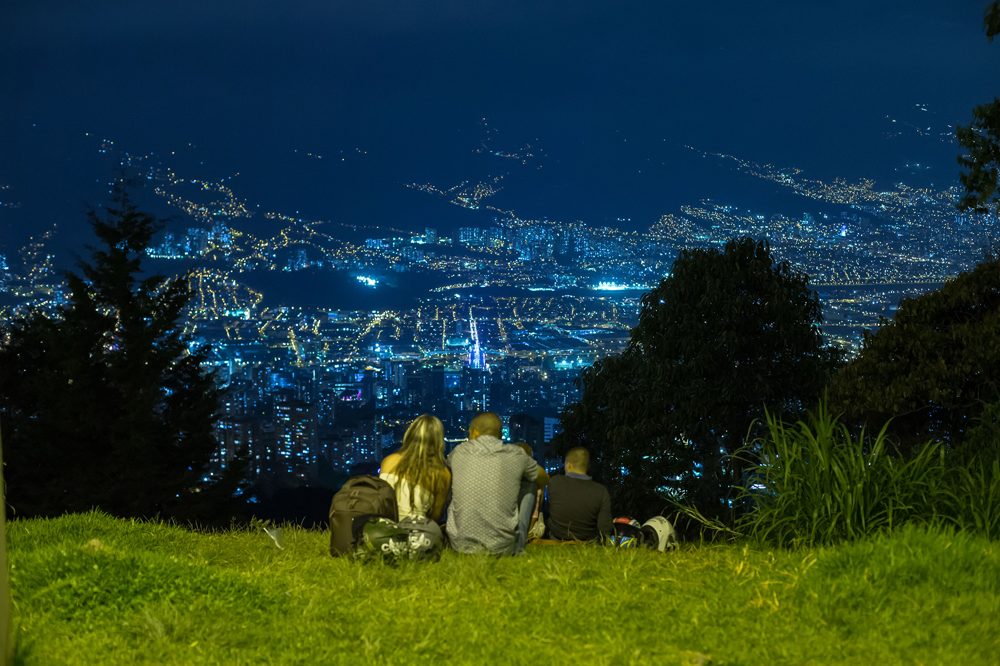

MIRADOR LAS PALMAS
En el oriente de Medellín, permite contemplar toda la extensión del Valle del Aburrá y capturar hermosas panorámicas Sobre todo en el atardecer, con la puesta de sol directamente enfrente, o al anochecer, cuando el entramado de luces forma un tapete luminosos que se despliega hasta las montañas Este lugar es reconocido por sus vistas panorámicas, por lo que es una parada común para aquellos que desean capturar fotos impresionantes de Medellín y disfrutar de la vista de la ciudad desde las alturas
MIRADOR SAN FELIX

Si quieres ir al extremo y realmente pasear por las nubes, debes visitar el Mirador San Félix. Entre los miradores de Medellín, la práctica del parapente es un verdadero plus a esta experiencia. Los paisajes de los atardeceres desde el Mirador San Félix son realmente únicos. En el sitio, hay servicios de restaurante, áreas de descanso y camping para pasar un día fantástico.
MIRADOR DEL CIELO

El Mirador del cielo sin lugar a duda uno de los miradores, mas hermosos de Medellin, por eso cuando piensas en Medellín seguramente piensas en la Ciudad de la Eterna Primavera, llena de flores, innovación, gente amable y alegre y por supuesto grandes aventuras. Al estar en Medellín, tienes muchos planes entre los cuales puedes escoger para no perderte de nada en la ciudad y entre estos está en definitiva observar Medellín desde lo alto, en su inmensidad.
MIRADOR DEL PICACHO

El ecoparque mirador Cerro El Picacho se encuentra ubicado en el noroccidente de Medellín, en la Comuna 6 (12 de Octubre). Posee un alto valor ecológico para la ciudad, siendo un lugar de conexión con la parte alta del cerro. En 1936, Monseñor Félix Henao Botero, fundador de la Universidad Pontificia Bolivariana, propuso a la comunidad campesina y los habitantes del sector, ubicar en la cima del Cerro un Cristo Salvador de dos metros y medio traído de Europa, con el fin de convertir este lugar en un nuevo referente religioso. Actualmente, este Cristo, quien con sus brazos abiertos cobija y protege el Valle de Aburrá, es visitado por miles de peregrinos y turistas